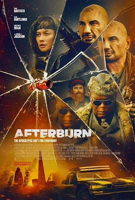

4.3
余烬夺宝
Afterburn
2025
美国
评分 4.3
导演:
J·J·佩里（J.J. Perry）
演员:
戴夫·巴蒂斯塔 / 塞缪尔·杰克逊 / 欧嘉·柯瑞兰寇 / 克里斯托弗·海维尤 / 丹尼尔·伯哈特 / 伊登·爱普斯坦 / 乔治·索纳
类型:
喜剧,科幻
剧情简介
在一次毁灭性的太阳耀斑席卷地球后，东半球化为焦土，科技文明崩塌，通讯中断，空气中弥漫着烧焦的尘埃。数年之后，昔日的欧洲成为废墟与掠夺者的乐园，人类社会退化为零散的势力据点。杰克·布罗迪（戴夫·巴蒂斯塔饰）是一位满身疤痕的退役飞行员，靠在废墟中搜寻遗失的艺术品为生——他不为理想，只为生存。某天，一位神秘雇主找到他，提出一项疯狂的任务：潜入被太阳辐射摧毁的巴黎，取回失踪的《蒙娜丽莎》。报酬丰厚，却几乎是送命的旅程。杰克召集了一支临时队伍：叛逆的前情报员艾莉（欧嘉·柯瑞兰寇饰）、毒舌老兵卡特（塞缪尔·杰克逊饰），以及一群性格各异的拾荒者。他们驾驶装甲越野车穿越辐射荒原、废弃城堡与失控的自治机器人阵地，一路伴随着讽刺与混乱的对话。影片以幽默与反讽贯穿全程，将末日题材与“夺宝冒险”巧妙融合。巴蒂斯塔饰演的杰克外表刚硬，却被过去的阴影所困；他逐渐意识到，人类真正需要的并非一幅画，而是重新相信希望的理由。影片中多次借“蒙娜丽莎”象征人类文明的记忆与美感，成为灾后世界中最后的精神火种。导演J·J·佩里以动作与荒诞喜剧的双线风格打造了视觉奇观：爆破中的卢浮宫残骸、漂浮在辐射云海上的飞艇、燃烧的废都与失控的AI守卫，让“废土寻宝”呈现出漫画般的色彩与张力。塞缪尔·杰克逊贡献了全片最锋利的台词，而欧嘉·柯瑞兰寇的冷峻气质则为团队增添了现实的情感支撑。结尾处，杰克在废墟大厅中面对那幅被烟尘掩盖的名画，缓缓擦去尘埃——画中微笑依旧，仿佛在注视人类残存的尊严。那一刻，笑与泪交织成文明的余烬。